10 面部上三分之一：颞嵴平滑术
面部上三分之一颞嵴平滑术
JANI VAN LOGHEM
本文描述了使用锐针和非创伤性钝性套管针减少颞嵴棱角的方法。平滑颞嵴可以减轻骨骼感外观，因此具有温和的抗衰老作用。通常情况下，额肌会向外侧延伸至颞嵴之外。因此，首选注射深度是在延伸至颞区筋膜间层的皮下鞘层（图 10.1）。
10.1 颞嵴平滑术（锐针多团注技术）
关于注射定位，参见图 10.2 [1]。
10.1.1 分步技术
-
对颞嵴进行消毒和标记（图 10.3）。
-
使用全粘度（未稀释）的羟基磷灰石钙（CaHA）或标准稀释浓度的 CaHA。
-
检查搏动，并避免触及浅颞动脉和静脉。
-
将 27G、19 mm 针头以 45–90° 角缓慢推进至皮肤，直至骨膜外侧的颞嵴（图 10.4）。患者可能会感觉到一声咔嗒声，这是针穿过筋膜并到达骨膜时发出的声音。
-
斜切针头应轻触骨膜，患者可能会感到一定的压力。
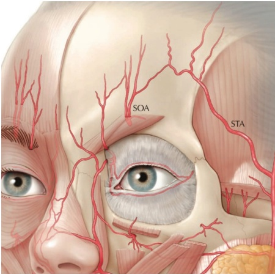
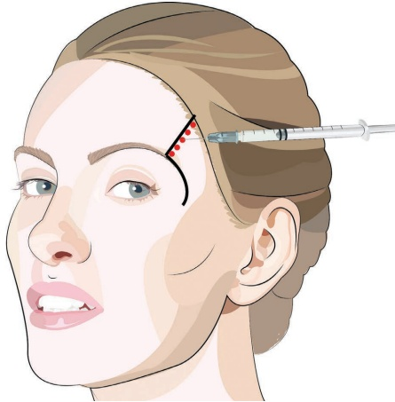
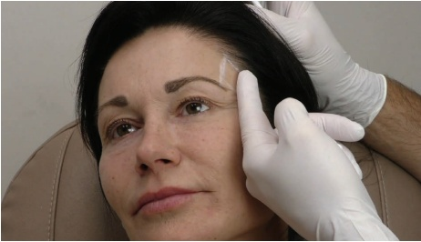
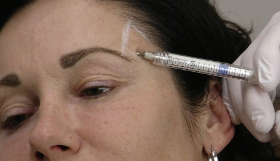
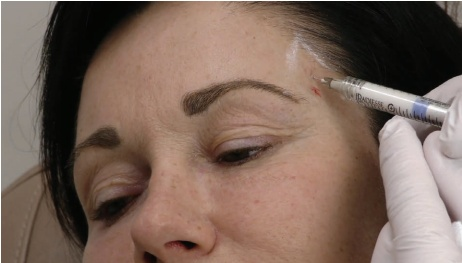
图 10.5 使用相同的进针点，不从皮肤取出针头，后退、重新定位、再次推进并于外侧颞嵴的骨膜上注射一到两个团注，每团约 0.05–0.1 mL，向下斜切。使用第二个，可选地使用第三个进针点并重复此过程。
-
不进行吸液，因为其不可靠 [2]。
-
缓慢、低压地于骨膜上注射约 0.05 mL 的 CaHA 团注（图 10.5）。
-
部分后退、重新定位并再次推进针头至骨膜，距离第一个团注约 5 mm。
-
再注射一个约 0.05 mL 的 CaHA 团注，向下斜切。
-
重复这些步骤直到嵴得到满意矫正。
-
使用额外的进针点重复此过程。
-
用有目的的塑形使区域平滑：从外侧到内侧。
10.2 颞嵴平滑（皮下钝性套管技术 1）
参见图 10.6 了解注射放置位置。
10.2.1 分步技术
-
对颞嵴进行消毒和标记。
-
在外侧眉部，标记进针点并进行麻醉。
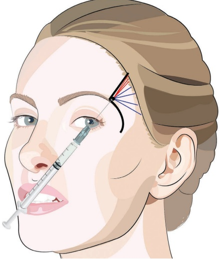
-
使用 23G 针进行预孔。
-
使用 CaHA 的标准稀释液或未稀释产品。
-
将套管穿过皮肤到达皮下脂肪，再穿过额肌和腱膜（图 10.7）。
-
沿着外侧颞嵴推进并注射一个或多个向远端线性牵引线（图 10.8）。
-
继续在间层空间进行扇形注射（图 10.9）。
-
用轻柔按摩使区域平滑。
10.3 颞嵴平滑（间层和皮下腱膜套管技术 2）
参见图 10.10 了解注射放置位置。
10.3.1 分步技术
-
对颞嵴、眶上缘、外侧眶缘和颧弓进行消毒和标记（图 10.11）。标记需要增强的 C 形区域，并注意浅颞动脉的走向。
-
可考虑进行颧颞神经和眶上神经阻滞；请参阅第 3 章中的阻滞麻醉。
-
使用全粘度（未稀释）CaHA 或标准稀释液。
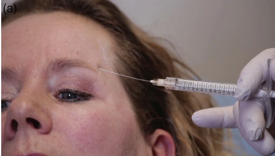
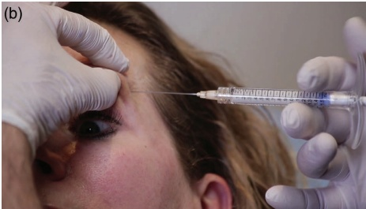
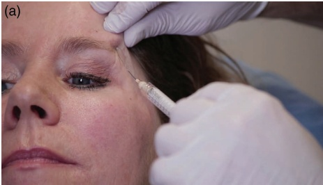
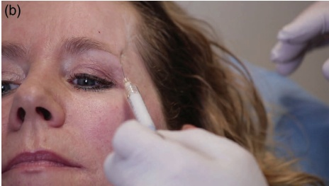
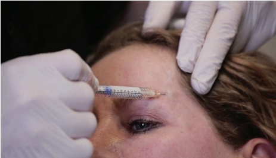
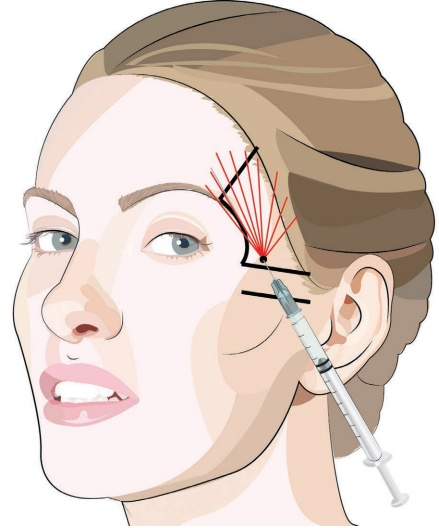
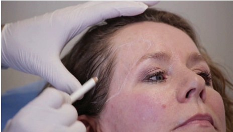
-
在颧弓的上缘，位于耳廓和外眼角之间约中点处，标记入点并进行麻醉。
-
使用 23G 锐针进行预刺孔。
-
将钝性套管针通过皮肤到达皮下脂肪层。
-
旋转钝性套管针并穿过颞骨-额骨筋膜的阻力（图 10.12）。
-
在颞嵴处，抬起前额肌以将钝性套管针推进到颞嵴深方（图 10.13）。
-
利用皮肤的柔韧性将钝性套管针推进至额部区域并在头皮下间隙注射产品（图 10.14）。
-
由于深层颞筋膜的解剖层次与额骨的骨膜连续，从筋膜间隙穿过颞嵴可以使钝性套管针位于头皮下间隙。
-
也可以考虑推进到发际线以外的区域以减轻颞部凹陷。
-
重复这些步骤直到该区域得到满意矫正。
-
用轻柔按摩使其均匀平滑。
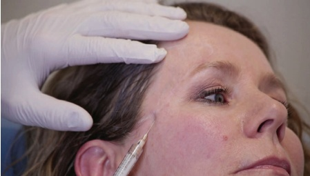
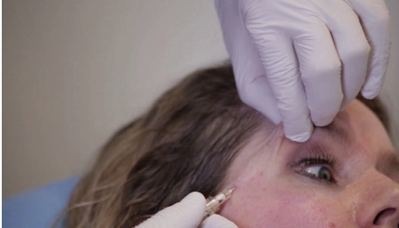
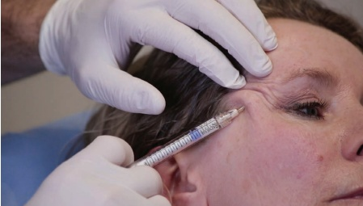
10.4 术后护理
如有必要，可手动按摩该区域以使产品均匀分布。进行此操作时，尝试通过在皮肤上有目的的塑形（“摇动和滚动”）将产品按摩至紧邻的侧颞嵴。注射后，由于该区域压力增加，可见静脉和浅颞动脉扩张。太阳穴的水肿可能不均匀，因此应告知患者任何水肿都是可以预期的且是暂时的，通常持续一天，但最长可达五天。在皮下层注射时，水肿比在更深层注射时更严重。使用锐针进行骨膜注射时，由于产品主要采用此技术肌内注射 [3]，可能会出现咀嚼时疼痛。
10.5 实现最佳效果的附加治疗
为进一步改善颞部轮廓和骨骼感外观的美学效果，可考虑用肉毒毒素和填充剂来填充颞部凹陷和重塑眉弓。此外，根据患者的具体情况和需求，可能建议使用局部乳膏、去角质或激光进行皮肤改善。
有关术前和术后效果以及应用技术，请参阅图 10.15。
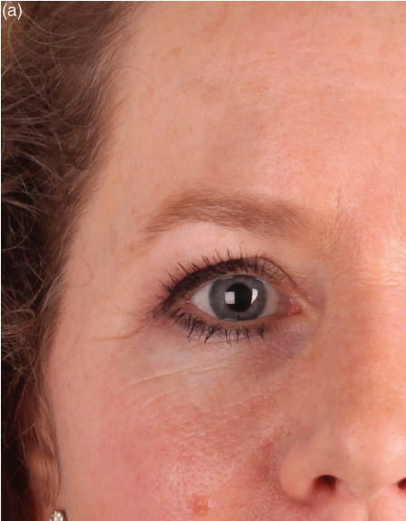
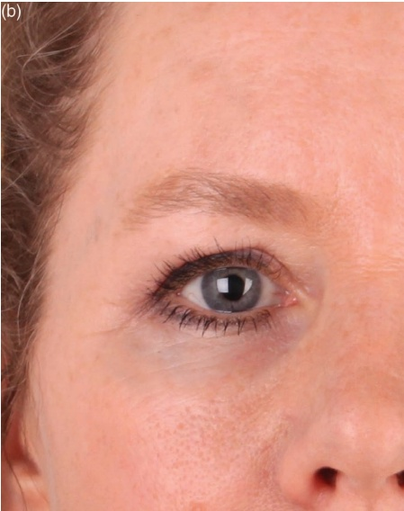
参考文献
[1] J. A. J. van Loghem et al., “Calcium hydroxylapatite: Over a decade of clinical experience,” J Clin Aesthet Dermatol, vol. 8, no. 1, pp. 38–49, Jan. 2015.
[2] J. A. J. van Loghem et al., “Sensitivity of aspiration as a safety test before injection of soft tissue
fillers," J Cosmet Dermatol, vol. 17, no. 1, pp. 39–46, Feb. 2018.
[3] J. A. J. van Loghem, “Use of calcium hydroxylapatite in the upper third of the face: Retrospective analysis of techniques, dilutions and adverse events,” J Cosmet Dermatol, vol. 17, no. 6, pp. 1025–1030, Dec. 2018.